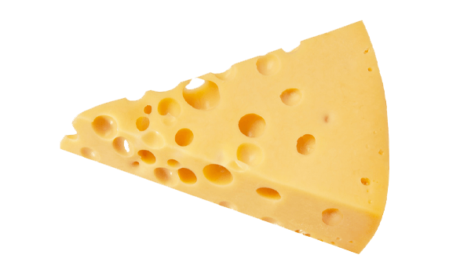
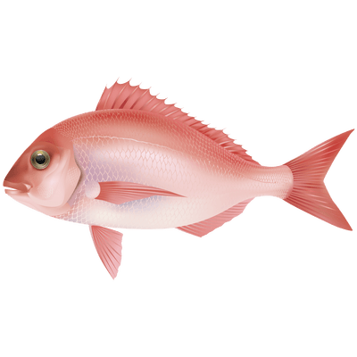

Reto: crear una lista de
Lista del Supermercado 📝
Frutas y Verduras
Naranja 🍊
Manzanas 🍎
Bananas 🍌
Berenjena 🍆
Tomate 🍅
Lacteos
Leche 🍼
Queso

Carnes
Pollo 🐔
Carne 🐄
Pescado 🐟

Hecho por Mariam Levy